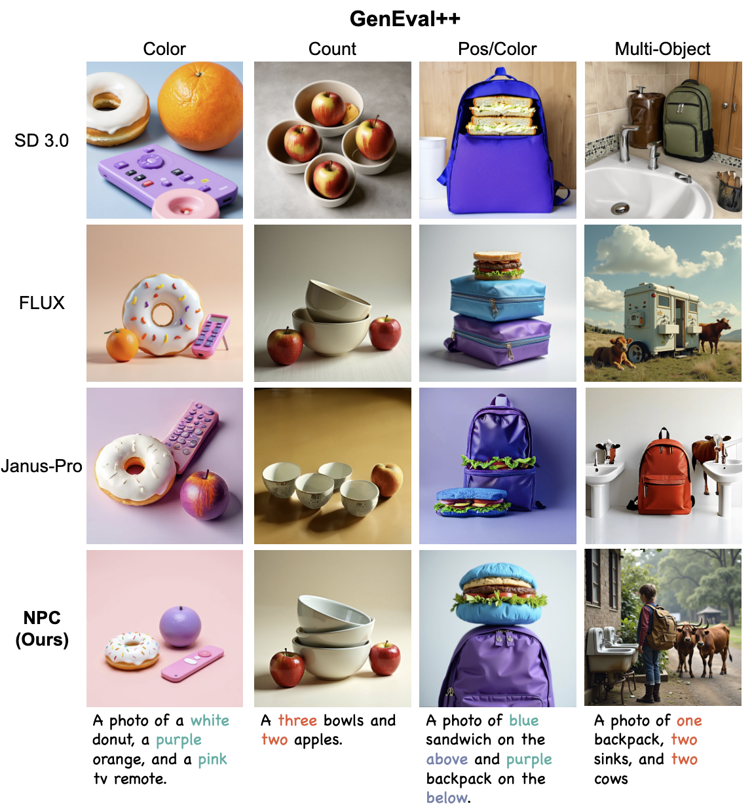

Guiding What Not to Generate: Automated Negative Prompting for Text-Image Alignment
The IEEE/CVF Winter Conference on Applications of Computer Vision (WACV), 2026
We introduces Negative Prompting for Image Correction (NPC), an automated pipeline for using negative prompts to enhance image-text alignment.